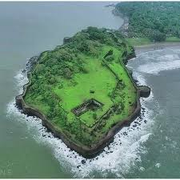
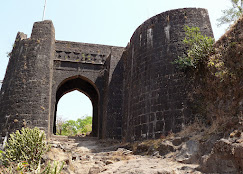
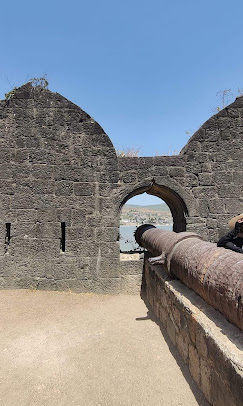
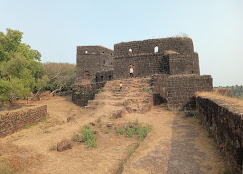
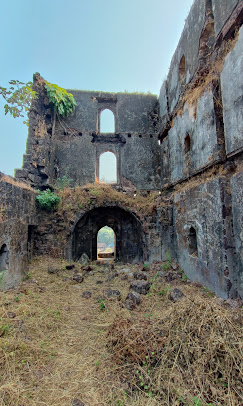

विजयदुर्ग किल्ला
Location : Click Here For Google Map
- माहिती
- विजयदुर्ग किल्ला महाराष्ट्र राज्याच्या सिंधुदुर्ग जिल्ह्यात स्थित एक ऐतिहासिक किल्ला आहे. हा किल्ला अरबी समुद्राच्या किनाऱ्यावर वसलेला आहे आणि छत्रपती शिवाजी महाराजांच्या काळातील महत्त्वपूर्ण किल्ल्यांपैकी एक आहे. किल्ल्याची बांधणी १४व्या शतकात झाली होती, आणि त्याचे सामरिक महत्त्व अत्यधिक आहे.
किल्ल्याच्या भिंती, गडाच्या दोन मुख्य प्रवेशद्वारांची संरचना, आणि समुद्राच्या सान्निध्यामुळे तो एक सुरक्षित किल्ला बनवला होता. विजयदुर्ग किल्ला समुद्रातून होणाऱ्या हल्ल्यांसाठी प्रभावीपणे तयार केला गेला होता, आणि यामुळे तो किल्ला चांगला संरक्षण देणारा ठरला.
किल्ल्याच्या शिखरावरून अरबी समुद्राचा लांबचा दृश्य दिसतो, आणि त्याच्या भिंती, किल्ल्याचे रक्षण करणारे उंच ठिकाणे आणि इमारती आजही आकर्षक आहेत. विजयदुर्ग किल्ला त्याच्या ऐतिहासिक कलेचा आणि स्थापत्यशास्त्राचा उत्तम उदाहरण म्हणून पाहिला जातो.
आजकाल, विजयदुर्ग किल्ला एक प्रमुख पर्यटन स्थळ बनला आहे. त्याच्या ऐतिहासिक महत्त्वाचे उदाहरण आणि समुद्र किनाऱ्याचे निसर्ग सौंदर्य पर्यटकांना आकर्षित करते. किल्ल्याच्या विविध रचनांची व संरचनांची सुसंवादशक्ती आणि त्याचे स्थापत्य हे किल्ल्याच्या महत्त्वाचे घटक आहेत.
Explore the historical beauty




